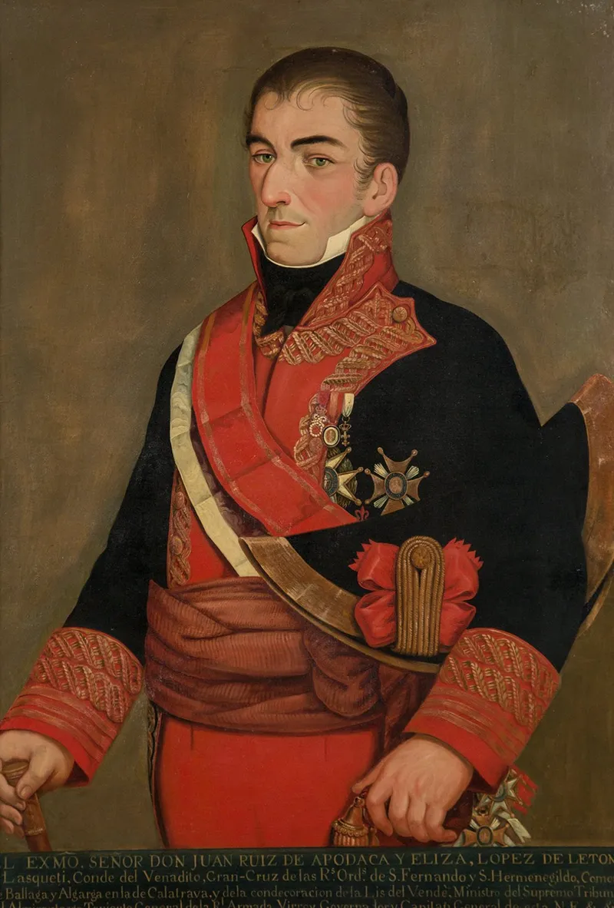

OKpolítico
OKpolítico1816: El Indulto y la Tormenta que Viene
▶ Ver este video en YouTube y suscríbete

En esta tercera y última parte de 1816, exploramos la llegada del Virrey Juan José Ruiz de Apodaca a la Nueva España. Analizamos cómo su política de indultos cambió el curso de la guerra, logrando la rendición de miles de insurgentes sin disparar un solo cañón. Mientras tanto, en las sombras de la c
Compartir por WhatsAppLa llegada del 'Clemente' Apodaca
El 20 de septiembre de 1816, Juan José Ruiz de Apodaca entra formalmente en la Ciudad de México para asumir el cargo de Virrey. A diferencia de su predecesor, el implacable Félix María Calleja, Apodaca llega precedido por una fama de hombre moderado y diplomático.
Su trayectoria no es la de un simple militar de tierra; es un marino experimentado, un hombre que ha servido como embajador en Londres y gobernador en Cuba. Esta visión cosmopolita le permite entender que la guerra en la Nueva España no puede ganarse únicamente con el cadalso.
✉️ Recibe lo importante del día en tu correo. Suscríbete gratis →Al recibir el bastón de mando, Apodaca se encuentra con una capital que respira un aire de tensa calma, pero con una economía devastada por seis años de interrupción comercial. Su entrada no es solo un cambio de nombres, es un cambio de paradigma: la Corona española, agotada tras las guerras napoleónicas, necesita pacificar sus colonias con urgencia y menor costo.
Apodaca es la pieza clave para esta nueva estrategia de 'pacificación por el perdón'. Apodaca recibe un virreinato exhausto.
Su primera gran medida es la implementación sistemática del indulto: ofrece perdón y tierras a los insurgentes que depongan las armas. Esta estrategia busca ganar corazones donde Calleja solo buscaba obediencia por miedo.
El nuevo Virrey comprende que la insurgencia se alimenta del resentimiento y la falta de alternativas. Al ofrecer una salida digna y la posibilidad de reintegrarse a la vida civil, Apodaca comienza a desmoronar las filas rebeldes desde adentro.
Los informes de la época detallan cómo grupos enteros de combatientes, cansados de vivir en las montañas y sufrir carencias, comienzan a bajar a los pueblos para entregar sus fusiles a cambio de un papel firmado que les garantiza la vida.
No es solo clemencia, es una táctica de contrainsurgencia psicológica que resulta ser más efectiva que las ejecuciones en masa que caracterizaron los años anteriores. Para los historiadores modernos, esta transición no fue solo un cambio de estilo personal, sino una imperiosa necesidad económica.
El virreinato estaba en bancarrota técnica. Mantener el gigantesco aparato represivo de Calleja, con sus milicias locales y ejércitos expedicionarios, era financieramente insostenible. La Corona española, lidiando con sus propias crisis internas y la pérdida de ingresos de otras colonias, ya no podía enviar refuerzos ni fondos.
Apodaca, con su experiencia administrativa, revisa las cuentas y decide que la paz es más barata que la guerra. Suspende los préstamos forzosos que tanto habían irritado a la élite novohispana y trata de reactivar la minería, el motor del virreinato, que se encontraba paralizado por la inseguridad en los caminos.
La 'paz de Apodaca' es, en esencia, un proyecto de reconstrucción económica bajo el estandarte de la clemencia real.
El Juicio de Iturbide y la Limpieza de la Casa
Mientras el nuevo Virrey se asienta, un expediente espinoso aguarda resolución: el caso de Agustín de Iturbide. El joven y brillante coronel realista, héroe de batallas cruciales contra Morelos, ha sido acusado de malversación de fondos y abusos de autoridad en el Bajío.
Las quejas de los comerciantes de Querétaro y Guanajuato son graves: acusan a Iturbide de monopolizar el comercio de granos y de utilizar su posición militar para enriquecerse ilícitamente. Calleja lo había destituido meses atrás, pero el proceso judicial seguía abierto.
Para Apodaca, este caso es una prueba de fuego para su política de legalidad. Iturbide no es un insurgente, es uno de los suyos, un oficial de élite,
pero sus excesos representan el tipo de gobierno arbitrario que el nuevo Virrey desea erradicar para recuperar la confianza de la población. Hacia finales de 1816, las investigaciones judiciales sobre Iturbide comienzan a cerrarse.
Aunque se le absuelve de los cargos más graves por falta de pruebas contundentes —en gran medida debido a la red de influencias que el coronel mantiene en la capital y el apoyo de poderosos aliados en el clero y la milicia—, el daño a su carrera parece definitivo.
Iturbide permanece en la Ciudad de México, alejado del mando activo y de sus tropas en el Bajío. Este periodo de ostracismo es fundamental: mientras Apodaca intenta pacificar el país, Iturbide rumiaba un resentimiento profundo contra el sistema que, a su juicio,
lo había traicionado después de sus servicios a la Corona. En los salones de la capital, el futuro libertador observa cómo la política de indultos de Apodaca cambia el panorama, mientras él espera una oportunidad para volver a la escena política.
La Resistencia en las Sombras: Guerrero y Victoria
A pesar de la política de indultos, no todos aceptan el perdón. En las abruptas sierras del sur, Vicente Guerrero consolida su mando. Guerrero es un líder distinto; su conocimiento del terreno y su conexión con las poblaciones indígenas y afromexicanas le permiten mantener viva la llama de la insurgencia.
Mientras otros líderes se rinden, él se repliega a las zonas más inaccesibles, manteniendo una estructura de gobierno mínima y una capacidad de ataque que desgasta a las tropas realistas. Apodaca envía emisarios para ofrecerle el indulto, incluso utilizando a su propio padre para convencerlo, pero Guerrero se mantiene firme.
La guerra en el sur se convierte en un conflicto de baja intensidad, una guerra de guerrillas donde el ejército español, a pesar de su superioridad numérica, no logra asestar un golpe definitivo.
En la zona de Veracruz, Guadalupe Victoria aplica una táctica de supervivencia extrema. Tras la desarticulación de las grandes fuerzas insurgentes, Victoria se interna en la selva, desapareciendo por largos periodos.
Sus ataques a los convoyes que viajan entre el puerto de Veracruz y la capital son quirúrgicos y desmoralizantes para el comercio. Para el gobierno virreinal, estos líderes ya no son considerados generales de un ejército rebelde, sino 'bandidos' o 'gavilleros'.
Sin embargo, para las poblaciones locales, ellos representan la continuidad de la causa de Morelos. La resistencia de Guerrero y Victoria en 1816 es simbólica pero vital: impide que Apodaca pueda declarar la pacificación total del reino y mantiene un foco de esperanza para aquellos que aún sueñan con la independencia absoluta.
La Expedición de Mina: El Liberalismo se Arma
Lejos de las costas mexicanas, en Baltimore y Nueva Orleans, el joven navarro Francisco Xavier Mina ultima los detalles de su expedición. Mina es una figura fascinante: un héroe de la guerra contra Napoleón en España que, tras el regreso absolutista de Fernando VII, se ha convertido en un exiliado político.
Su lucha no es contra España, sino contra el absolutismo. En Londres conoció a fray Servando Teresa de Mier, quien lo convenció de que la mejor forma de herir al despotismo de Fernando VII era ayudando a la independencia de México.
Mina representa una nueva fase de la guerra: la internacionalización del conflicto. Ya no es solo una rebelión interna, sino parte de una lucha global entre el liberalismo y el absolutismo que sacude a todo el mundo atlántico.
Mina no viaja solo; cuenta con el apoyo de exiliados europeos, oficiales veteranos de las guerras napoleónicas y, crucialmente, financiamiento de comerciantes estadounidenses. En diciembre de 1816, su flota se prepara para zarpar desde Galveston.
El Virrey Apodaca, gracias a su red de espías en Estados Unidos, está al tanto de estos movimientos. La preocupación en el Palacio Virreinal crece: una expedición liderada por un militar profesional español podría aglutinar a los insurgentes dispersos y darles la disciplina que les ha faltado.
Apodaca refuerza las defensas costeras y ordena una vigilancia extrema en el Golfo. Sabe que la paz que ha construido con indultos es frágil y que el desembarco de Mina podría ser la chispa que reinicie el incendio que él tanto se ha esforzado en sofocar.
El Mundo en 1816: Un Año de Cambios
Mientras México experimenta la transición hacia el mando de Apodaca, el resto del continente americano vive momentos definitorios. En julio de 1816, el Congreso de Tucumán declara formalmente la independencia de las Provincias Unidas del Río de la Plata.
Es un golpe devastador para el prestigio español en el sur. Sin embargo, en el Alto Perú, la situación es distinta: las fuerzas realistas logran victorias significativas en septiembre, terminando con la vida de líderes como Manuel Ascencio Padilla e Ignacio Warnes.
Estas derrotas parecen aplastar la resistencia en la región, dejando a figuras como Juana Azurduy en una situación de aislamiento extremo. El imperio español lucha por mantener sus piezas en el tablero, ganando en unos frentes mientras pierde irremediablemente en otros.
En Estados Unidos, el panorama político cambia con la victoria de James Monroe en las elecciones de noviembre. Monroe, un demócrata-republicano, representa una visión de expansión y una postura cada vez más firme frente a las potencias europeas.
Aunque Estados Unidos mantiene una neutralidad oficial, el ambiente en ciudades como Nueva Orleans y Baltimore favorece abiertamente a los insurgentes hispanoamericanos. El ascenso de Monroe prepara el terreno para lo que años más tarde será su famosa doctrina, pero en 1816,
su importancia radica en la tolerancia hacia las expediciones como la de Mina, que se organizan en suelo estadounidense bajo la mirada complaciente de las autoridades locales.
En el ámbito de las ideas y la cultura, 1816 deja una huella imborrable en la Nueva España con la publicación de 'El Periquillo Sarniento'. José Joaquín Fernández de Lizardi, conocido como 'El Pensador Mexicano', logra publicar esta obra que, bajo la apariencia de una novela picaresca, es una crítica feroz a la sociedad colonial.
Lizardi utiliza la sátira para denunciar la corrupción del sistema judicial, la deficiente educación y las desigualdades sociales. Es la primera novela moderna de América Latina y aparece en un momento de censura, demostrando que la lucha por la libertad también se libraba en las imprentas.
Mientras Apodaca ofrece indultos militares, Lizardi ofrece una disección moral de un sistema que, a pesar de las reformas del Virrey, muchos consideran que ya no tiene remedio.
Mito vs. Realidad: ¿Fue Apodaca un Virrey Débil?
La historiografía tradicional, a menudo influenciada por los sectores más conservadores del ejército realista, presentó a Apodaca como un gobernante débil o excesivamente blando, contrastándolo con la 'mano de hierro' de Calleja. Sin embargo, un análisis de los documentos administrativos revela a un burócrata eficiente y un estratega político astuto.
Apodaca logró reducir el número de insurgentes activos de forma más drástica que Calleja, y lo hizo sin el costo político y social del terror. Su política de indultos no era debilidad, sino realismo político: entendía que una colonia gobernada solo por el miedo es una colonia que nunca deja de conspirar.
Al restaurar cierta normalidad jurídica, Apodaca buscaba quitarle banderas a la rebelión. No obstante, el mito del 'Virrey Clemente' tiene sus matices oscuros.
Las ejecuciones no desaparecieron por completo; la orden de Apodaca era evitar las ejecuciones 'sumarias', es decir, sin juicio previo, pero el aparato militar seguía siendo implacable con aquellos que eran capturados con las armas en la mano y rechazaban el perdón.
Además, su administración mantuvo una vigilancia estrecha sobre la población civil. Un dato curioso que ilustra su control sobre la vida cotidiana es la prohibición de que los niños volaran papalotes o cometas desde las azoteas, argumentando razones de seguridad y orden público.
Miles de insurgentes aceptaron el indulto entre septiembre y diciembre de 1816, lo que permitió al Virrey presentar un informe optimista a Madrid, aunque la paz fuera, en realidad, una tregua armada.
Cierre del Año: La Calma antes de la Tormenta
Diciembre de 1816 llega a su fin con una Nueva España sumida en una paz aparente. El Virrey Apodaca ha logrado lo que parecía imposible un año antes: estabilizar las rutas comerciales entre la capital y los puertos,
reducir la violencia en el Bajío y proyectar una imagen de orden y clemencia. Las iglesias celebran misas de acción de gracias por la llegada del 'buen virrey'.
Pero bajo esta superficie de tranquilidad, los hilos de la historia se siguen moviendo. Los agentes realistas en el extranjero envían informes urgentes sobre la flota de Mina, y en las montañas del sur, los fogones de los campamentos de Guerrero siguen encendidos.
La estructura del virreinato parece sólida, pero sus cimientos económicos siguen siendo frágiles y dependen de una estabilidad que está a punto de ser desafiada. El llamado 'año sin verano', provocado por la erupción del volcán Tambora,
termina dejando tras de sí una estela de malas cosechas y hambre en diversas partes del mundo, incluyendo regiones de la Nueva España. Esta crisis climática añade una capa de dificultad a la gestión de Apodaca: el descontento por la falta de alimentos es un caldo de cultivo peligroso para la insurgencia.
Al cerrar el calendario de 1816, el tablero político está listo. El Virrey ha jugado sus cartas de perdón y reforma, pero la llegada de 1817 traerá consigo una prueba de fuego que no se resolverá con decretos ni indultos,
sino con el desembarco de una nueva amenaza que viene del mar. La guerra, en su forma más pura y obstinada, simplemente está cambiando de piel para el siguiente acto.
Sigue viendo
Con información de
Del Arenal Fenochio, Jaime. Cronología de la Independencia (1808-1821) · Wikipedia — Juan José Ruiz de Apodaca y Eliza · Wikipedia — Francisco Xavier Mina